FileDesk Pro 1.37 기능 둘러보기
이미지·PDF·오디오·영상 편집부터 문서 변환, 압축, 파일 공유까지. 기능을 선택해 작업 순서와 실제 앱 화면을 살펴보세요.
Pro 전체 기능
버전별 소개 Pro 1.37 · 콜라주 회전 · Pro 1.36 · 콜라주 앨범과 테마 · 기존 Pro 사용 안내와 화면
기존 Pro 사용 안내와 화면
아래는 처음 게시했던 Pro 기능별 사용 안내입니다. 화면은 영어 Pro 1.19에서 캡처했습니다.
이미지 편집·변환
이미지를 선택해 이미지 편집·변환을 열고 자르기·회전·크기를 조절합니다. 형식 버튼을 누른 뒤 저장·변환을 실행하세요. 흑백·반전은 다시 누르면 해제됩니다. 배경 제거는 피사체가 뚜렷한 사진에 적합하며 투명 결과는 PNG로 저장합니다. 인식 실패 시 다른 편집과 원본 미리보기를 유지합니다.

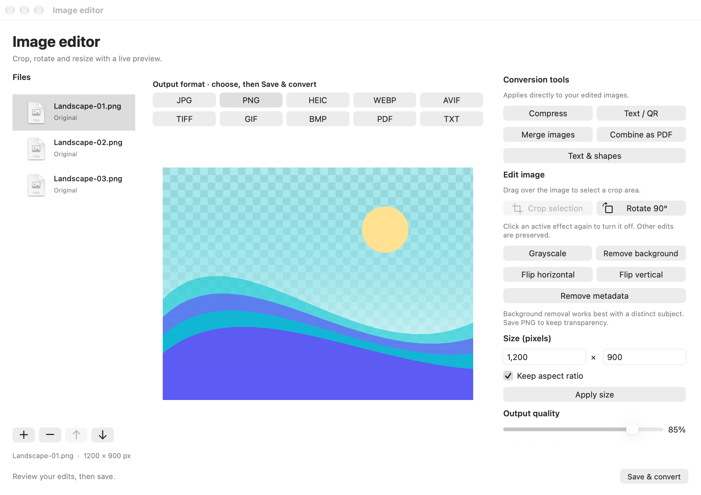
PDF 페이지·주석 편집
페이지 순서 변경·회전·삭제, 합치기·분할·추출·압축. 글·이미지·도형·강조·메모·서명을 추가하고 이동·크기 변경·삭제합니다. 영역 가리기, 워터마크·쪽 번호, 암호와 문서 정보를 관리합니다.
PDF 편집창에서 페이지를 선택해 순서·회전·삭제를 조정하고 필요한 주석을 추가합니다. 글·이미지·서명 등을 선택해 이동·크기 변경·삭제한 뒤 새 파일로 저장합니다.

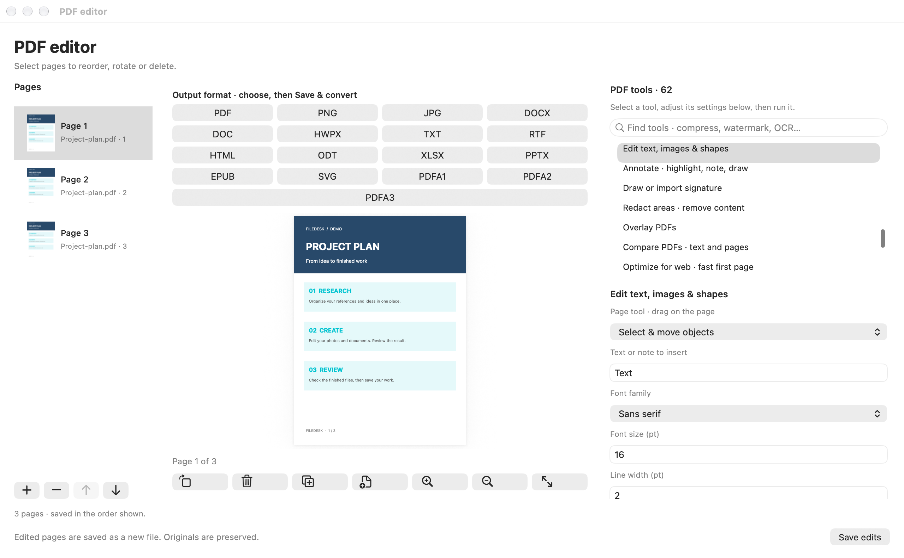
PDF 변환·인식·추가 도구
편집창에서 문서·이미지 변환, OCR, PDF/A, 웹 최적화, 메타데이터 제거, 비교·겹치기·복구를 바로 선택합니다. 스캔·카메라·화면 가져오기, 문서 묶기와 송장 자료 도구도 제공합니다.
PDF 편집창에 표시된 변환·추가 도구에서 원하는 출력 형식이나 OCR 등을 바로 고릅니다. 페이지 범위·언어·암호 등 해당 옵션을 확인하고 실행하세요. 지원 형식과 변환 한계는 아래 이용 조건을 확인하세요.

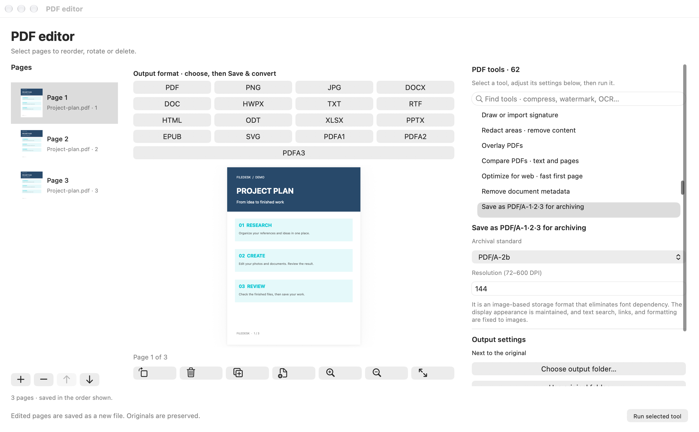
PDF 제출과 출력
표지를 붙여 제출 서류를 묶고, 송장 PDF나 XRechnung XML을 만드세요. 스캔·카메라·화면 캡처에서 페이지를 가져오거나, 여러 쪽을 한 장에 배치하고 출력 설정을 프로필로 저장할 수 있습니다. 보관용 PDF/A-1b·2b·3b는 페이지를 이미지로 고정합니다.
PDF/A와 영역 가리기는 페이지를 이미지로 고정합니다. EPUB은 텍스트 기반, SVG는 이미지 기반이며 변환 시 원본 서식 보존에는 한계가 있습니다. 암호 해제에는 필요한 암호가 있어야 합니다. 송장 XML은 XRechnung 형식이며 한국 전자세금계산서 발행 기능은 아닙니다.
오디오·스테레오·벨소리
파형에서 구간을 남기거나 삭제하고 속도·음량·음소거를 조절합니다. 스테레오 L/R 파형을 따로 편집하고 미리듣습니다. MP3·M4A·WAV·FLAC·Opus·AIFF 또는 30초 이내 M4R 벨소리로 저장합니다.
오디오 편집창에서 파형 구간을 선택하고 전체·왼쪽·오른쪽 채널을 고릅니다. 스테레오 L/R 파형을 따로 확인하며 편집 후 미리듣고 저장합니다. 벨소리는 30초 이내 구간을 M4R로 내보내며 기기로 전송·등록하는 과정은 별도입니다.

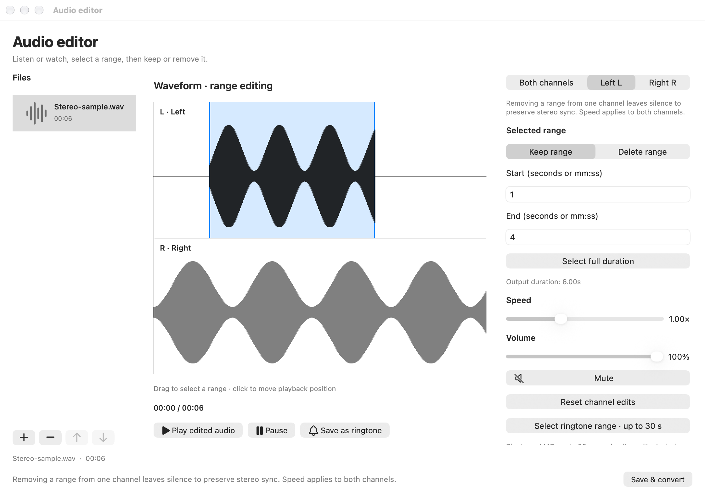
영상 편집·변환
미리보기에서 구간 편집, 속도·음량 조절. MP4·MOV·MKV·WebM 등 변환, 오디오 추출, 용량 줄이기, HEVC 변환, 장면 캡처와 GIF 만들기를 제공합니다.
영상 미리보기에서 시작·끝 구간과 속도·음량을 설정합니다. 출력 형식, 오디오 추출·GIF·장면 캡처 등 도구를 선택하고 저장 폴더를 확인한 뒤 실행합니다.

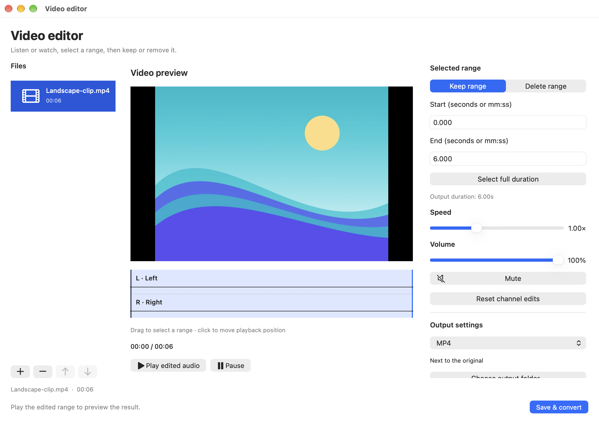
문서·자막·일괄 작업
지원 문서의 PDF·Word·HWPX·TXT·RTF·HTML·ODT 변환과 PDF의 XLSX·PPTX 내보내기. SRT·VTT·SMI 자막 변환, 이미지·PDF OCR, 여러 파일 일괄 실행과 저장 폴더 선택을 지원합니다.
변환 도구에서 지원하는 문서·자막 형식과 대상 파일을 선택합니다. 여러 파일을 일괄 처리할 때는 출력 형식과 저장 폴더를 확인하고 진행 결과에서 생성 파일을 엽니다.

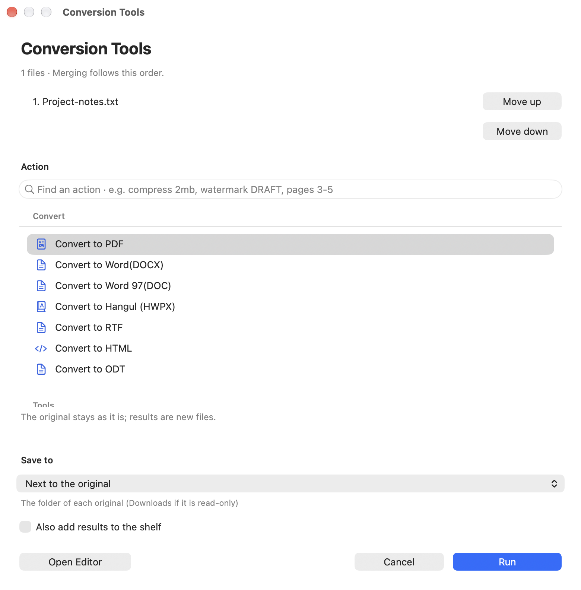
고급 압축 만들기·해제
7Z·ZIP·TAR 계열, DMG·ISO·Zstandard 등 만들기와 RAR·분할 파일·WPRESS 등의 해제. 형식별 암호·파일명 암호화·분할·압축 수준·개별 압축·검증·프리셋을 지원하며 별도 앱 설치가 필요 없습니다.
압축 만들기에서 출력 확장자를 먼저 고르면 그 형식에 맞는 암호·분할·압축 수준 등이 표시됩니다. 고급 압축 엔진이 포함되어 별도 앱 설치는 필요 없으며, 해제할 때 암호·분할 파일과 저장 위치를 확인합니다.

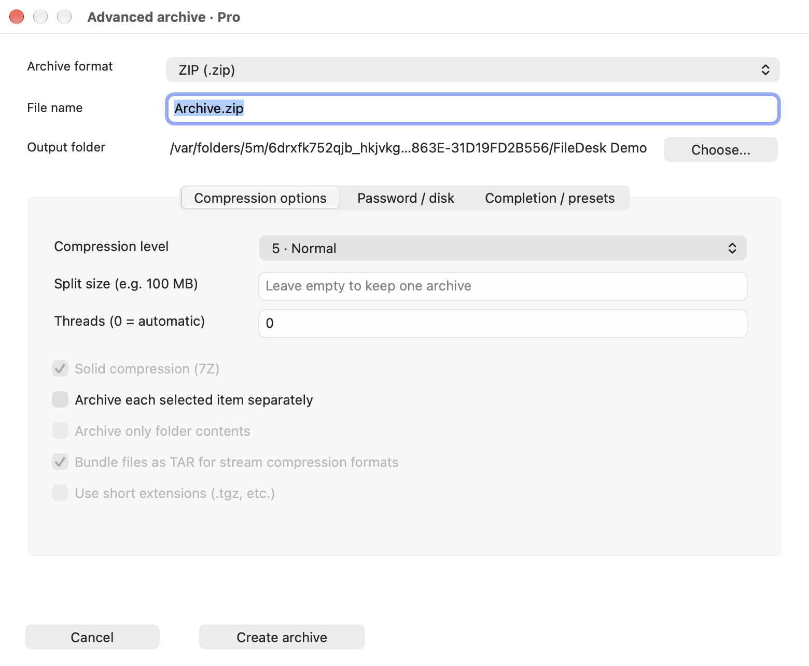
압축 옵션과 검증
지원 형식에 따라 압축 수준, 스레드 수, 분할 크기, 암호, 파일 이름 암호화를 고르세요. 항목별 압축, 폴더 내용만 묶기, Mac 메타데이터 처리, 결과 검증을 설정할 수 있습니다. 암호를 제외한 설정은 프리셋으로 저장됩니다.
압축 옵션은 형식에 따라 다릅니다. RAR·WPRESS는 해제만 지원합니다. 독립적으로 사용 가능한 외부 엔진을 각 라이선스에 따라 포함합니다. 오디오 한 채널의 구간 삭제는 싱크 유지를 위해 무음으로 남습니다.

원하는 터미널 앱 선택
설치된 iTerm2·Ghostty·Warp 등이나 직접 지정한 터미널 앱으로 폴더와 SSH 작업을 엽니다. 일반판은 macOS 기본 Terminal만 사용하며, 다른 앱 선택은 Pro 활성화 후 제공됩니다.
Pro 활성화 후 설정의 터미널 항목에서 설치된 앱을 고르거나 앱을 직접 지정합니다. 현재 폴더에서 터미널 열기나 SSH 작업을 실행해 선택한 앱으로 연결합니다.

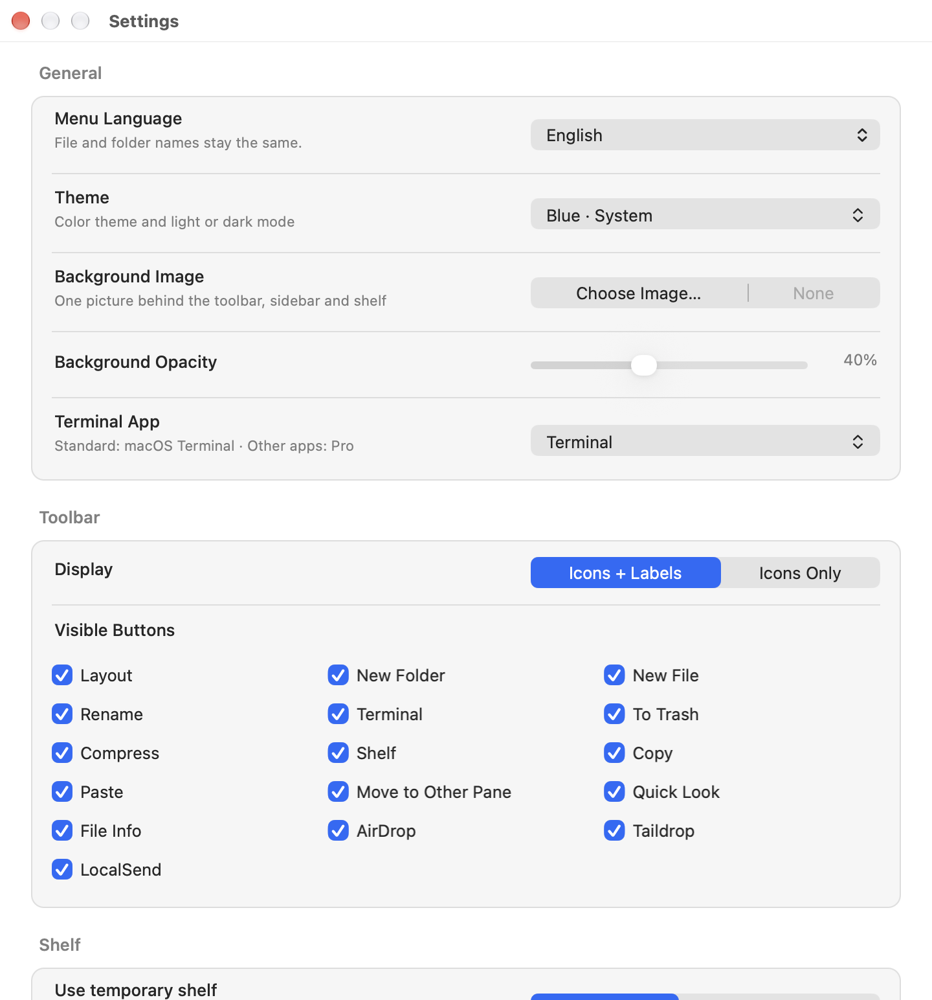
사진 콜라주
여러 사진을 한 화면에 이어 붙이거나 테이프와 핀으로 꾸민 앨범형 사진 템플릿을 선택하세요. 사진마다 액자 50종과 마스크 50종을 조합할 수 있습니다.
선택 영역 위의 둥근 조절점을 끌어 사진 칸, 액자, 마스크 또는 텍스트를 돌립니다. Shift를 누른 채 끌면 15° 단위로 회전합니다.

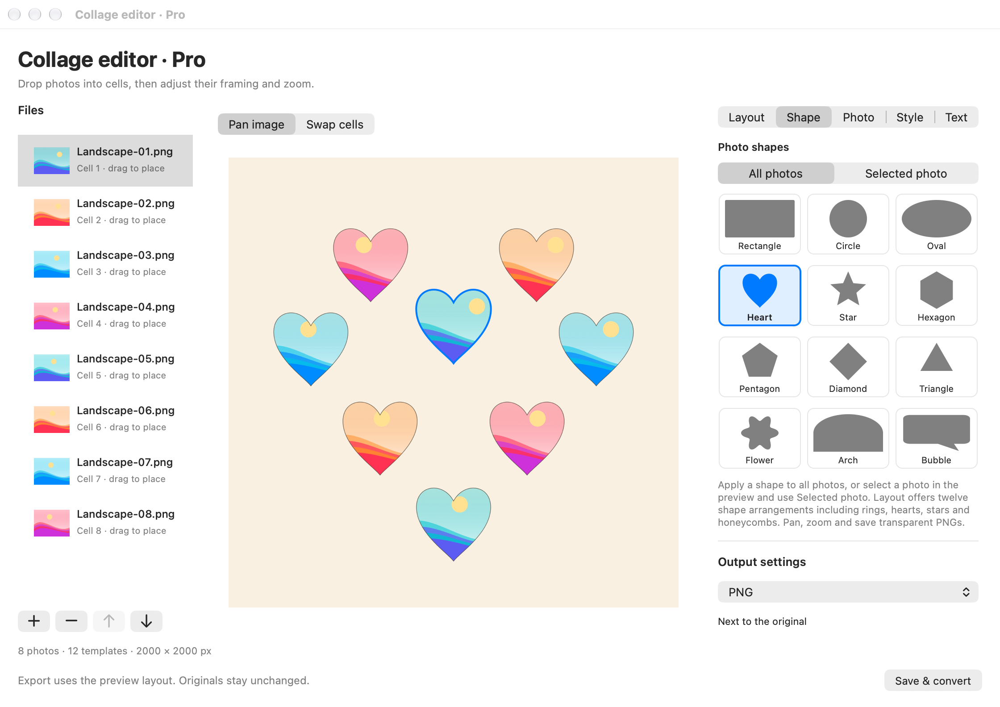

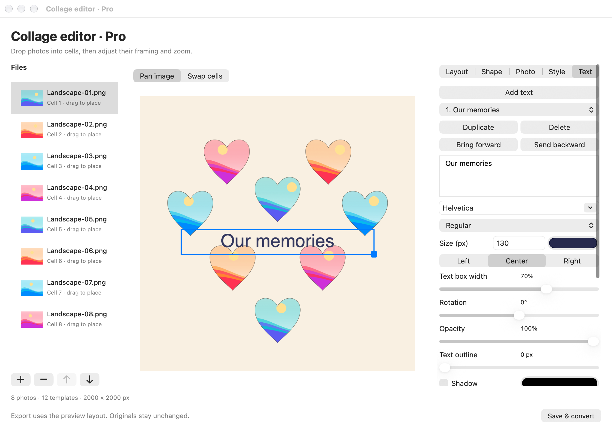

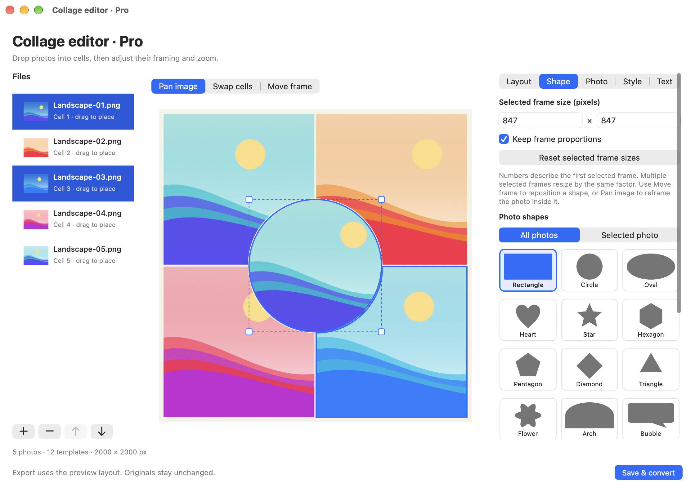
기존 Pro 사용 안내와 화면
미리보기를 보며 자르기·회전·크기 조절. 흑백·반전·배경 제거·메타데이터 제거를 켜고 끕니다. JPG·PNG·HEIC·WebP·AVIF 등 형식 선택, 용량 줄이기, 이미지 합치기, PDF 묶기와 QR 읽기를 제공합니다. 콜라주는 최대 20장, 2~20장 각각 36개 템플릿과 사진 이동·확대·축소·테두리·배경 조절을 지원합니다. 사진 모양 12종(원형·하트·별·꽃·다각형 등)과 별도 모양 배치 12종을 선택할 수 있습니다. 사진과 콜라주에 글꼴을 정해 글자를 넣고 이동·회전·크기를 조절합니다. 기존 사각형 격자 36종에 혼합 모양 템플릿 12종을 추가했습니다. 격자 배치와 믹스 템플릿을 모두 선택할 수 있습니다. 칸 크기는 모서리 드래그·숫자로 조절하고 Shift 드래그로 비율을 유지하며, 왼쪽 목록의 다중 선택도 지원합니다.
기존 사각형 격자 36종에 혼합 모양 템플릿 12종을 추가했습니다. 격자 배치와 믹스 템플릿을 모두 선택할 수 있습니다. 칸 크기는 모서리 드래그·숫자로 조절하고 Shift 드래그로 비율을 유지하며, 왼쪽 목록의 다중 선택도 지원합니다. 이미지 합치기에서 최대 20장을 넣으면 완성형 믹스 템플릿이 사진을 자동 배치합니다. 12종에는 원·하트·별·아치를 조합한 배치, 사선 모자이크, 물결 분할, 꽃잎 바람개비, 중앙 원형 배치, 기울어진 폴라로이드, 직접 그린 꽃 장식, 라운드 타일과 엽서가 있습니다. 사진 수에 맞춰 모양·크기·배경색·장식을 함께 적용합니다. 기존 36개 격자는 별도 선택합니다. 사진 칸을 클릭하고 네 모서리 손잡이를 드래그해 크기를 바꿉니다. Shift 드래그는 현재 비율을 유지합니다. 모양 탭에서 가로·세로 픽셀을 입력하고 비율 유지 또는 크기 초기화를 선택할 수도 있습니다. 칸 이동은 프레임 자체를, 구도 이동은 칸 안의 사진을 옮깁니다. 왼쪽 목록은 ⌘ 클릭으로 다중 선택, ⇧ 클릭으로 범위 선택, ⌘A로 전체 선택합니다. 선택한 사진을 함께 제거·순서 변경·모양 변경·자동 맞춤·크기 조절하며 실행 취소로 복원합니다. 사진을 교환해도 칸 모양과 크기는 유지됩니다. 글자 탭에서는 Mac 설치 글꼴·크기·색·정렬·회전·테두리·그림자를 조절하고 최대 20개 글상자(각 2,000자)를 넣습니다. 간격·여백·배경을 조절해 PNG/JPG로 저장하며 투명 영역은 PNG를 사용합니다. 원본은 변경하지 않습니다.
도구 막대와 작업 공간
시스템 도구 막대와 런처를 각각 창의 네 가장자리 중 원하는 곳에 배치하세요. 사이드바 섹션은 접거나 끌어서 순서를 바꿀 수 있습니다. 사이드바 하단에서 설정을 열면 Pro에서는 일반, 화면 모양, 도구 막대, 왼쪽 메뉴, 임시보관함, 전송, 라이선스를 한 창에서 관리합니다.
영역별 테마와 나만의 팔레트
추천 테마 8개에서 시작하거나 이미지에서 색을 추출하세요. 라이트·다크 모드별로 창, 사이드바, 도구 막대 두 개, 파일 창 여섯 개, 보관함, 선택 영역의 색과 투명도를 정할 수 있습니다. 자주 쓰는 색과 팔레트의 이름을 바꾸고, .fdtheme 파일로 저장하거나 다시 불러오세요.
폴더 하나로 시작하는 일괄 이름 변경
폴더를 고르면 바로 아래의 파일만 목록에 담깁니다. 접두어·접미어, 찾기와 바꾸기, 일련번호, 날짜, 대소문자 규칙을 조합하고 적용 전에 새 이름을 확인하세요. 확장자는 유지되며 규칙을 저장해 다시 쓸 수 있습니다.
음성, 받아쓰기와 번역
문서·PDF·자막을 선택한 음성과 속도로 읽어 M4A로 저장하세요. macOS 26 이상에서는 오디오·영상의 말을 SRT·VTT·TXT로 받아쓰고, 설치된 언어 모델로 문서와 자막을 번역할 수 있습니다.
변환 도구 열기와 결과 저장
파일을 더블클릭하면 macOS 기본 앱으로 열립니다. 편집할 때는 파일이나 보관함에서 변환 도구를 여세요. 원본 옆이나 선택한 폴더에 새 파일을 저장하고 FileDesk 패널에서 확인할 수 있습니다. 변환 목록에서는 결과를 보관함에도 추가할 수 있습니다.
Pro 1.36 · 콜라주 앨범과 테마
사진을 콜라주로 배치하고, 이미지에서 작업 창의 색을 고르고, 파일 형식에 맞는 편집 도구를 사용하세요.
편집기·설정·팔레트 이미지는 FileDesk Pro 1.36의 영어 화면입니다.

사진을 잇거나 앨범 페이지로 꾸미기
여러 사진을 한 화면에 이어 붙이거나 테이프와 핀으로 꾸민 앨범형 사진 템플릿을 선택하세요. 사진마다 액자 50종과 마스크 50종을 조합할 수 있습니다.
이미지에서 작업 창의 색 고르기
이미지에서 팔레트를 만들고 라이트 모드와 다크 모드에서 각 파일 창에 쓸 색을 지정하세요. 완성한 팔레트는 저장해 다시 적용할 수 있습니다.

이미지 팔레트 저장
이미지를 고른 뒤 추출한 두 모드의 색을 미리 확인하고 테마 파일로 저장하세요.

파일 편집과 분할 압축 해제
이미지 크기를 바꾸고 PDF에 주석을 달거나 오디오와 영상의 필요한 구간을 잘라낼 수 있습니다. 번호가 매겨진 분할 압축 파일은 중간 조각이 빠지면 압축 해제를 중단합니다.
Pro 1.37 · 콜라주 회전
선택 영역 위의 둥근 조절점을 끌어 사진 칸, 액자, 마스크 또는 텍스트를 돌립니다. Shift를 누른 채 끌면 15° 단위로 회전합니다.